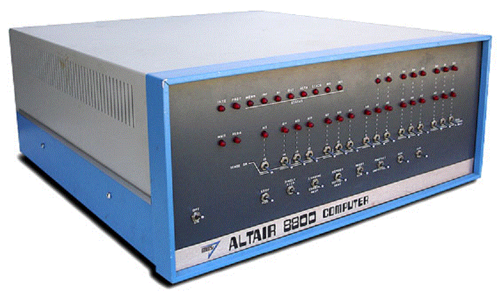

In the history of computers, there have been many great men and woman who have contributed to the advancement
of technology.In our lifetime, computers have gone from a hobbyist's project to a necessity. Steve Wozniack is one
such great inventor, known for his work on the Apple I ansd Apple II personal computers.
Growing up, Steve had many advanatges. His father was an engineer for Lockheed Martin and worked on top-secret
material ( Biography.com, 2013). Therefore, Steve was exposed to playing with circuits, building science kits and
getting expertise help from one of the most qualified engineers whenever he needed help in his experiments
( howmade.com, 2013). Steve would get ideas, be curious and build and rip apart items without a second thought.
Over the years, Steve build things with circuit boards, electricity and switches, TV's, professional grade VCR's,
unassembled computer kits, and HP calculators(Wozniack, 2006). Steve took all his knowledge and tinkering
abilities and rolled it into one product the Apple I computer(Wozniack,2006).
The only available computer was the 8800 Altair before the Apple I came along.

(oldcomputers.net,2013)oldcomputers.net
First , he and Steve Jobs wanted to make computers easy for everyone(Wozniack, 2006). It was easy for Steve
Wozniack to assemble the parts and write code, but no everone had his skill set. The two decided to make a better
computer kit, a circuit board, pre-assembled that only needed a keyboard, TV monitor, and a power supply to run
(Wozniack, 2006). The team founded Apple computers in 1976(Biography.com,2013). They had their own circiut boards
specially manufactured (old computerads, 2013). Next, came the coding. The computer of the day( 1976) had only RAM
memory and needed to be HARD coded, by hand each time on start up( today's boot-up)(Wozniack, 2006). Wozniack still
working at HP( Hewlett Packerd Co.)had to clear his invention with that company first, HP declined the product,
passing up the deal of a lifetime (Wozniack, 2006). After getting a working prototype, Wozniack showed off his
computer to the " Home Brewers" club, a local computer club for hobbyists( wozniack,2006).
Steve had to learn about processors and design code to run on the new computer. He spent time reading manuals
for processors; they were very expensive and hard to come by. He developed two programs; which could be typed
on start up. Then from there, a person still had to to code the computer himself to be able to do anything. At
that stage the Apple I, once turned on, did nothing; an engineer had to spend about 40 minutes typing BASIC, just
to get the computer ready for to accept additional programming(Wozniack, 2006). The two programs were for the
keyboard and the TV monitor, once those were typed in, a user still had to write code for all the tasks he wanted
to perform on the computer. The "boot up" was soon invented, as Wozniack made cassette tapes for his friends, with
his programs on it (Wozniack,2006). The cassette disk allowed a "boot up" from a cassette tape. Now, people that
could not build circuit boards or write machine langage code had the opprtunity to write code in BASIC, for
themselves, breaking down barriers between engineers and the general public. Apple was able to sell 50 computers
to a local computer shop, "The Byte shop"(Wozniack,2006). Wozniack was responsible for changing the modern
technology of the Altair computer , which only had lights and switches; to an Apple I computer with a keyboard,
TV monitor, and a boot up program located on a ROM chip(Wozniack, 2006).
The Apple I was the first great leap giving the general public access to a usable technology. As the Apple
company advanced, the Apple II was now the first computer to use a color monitor, a floppy disk drive, high-
resolution graphics, sound and gaming paddles (Wozniack, 2006). Soon after, many programmers were able to
write programs in BASIC, and sell thier products to local computer stores( Wozniack, 2006). Visicalc, was an
early example of an EXCEL type program that was paired with Apple II early on(Wozniack, 2006). Apple's
competitors were not as advanced for the time ( 1978) leading to Apple's popularity in being an innovating
company( Wozniack,2006). Steve Wozniack has made much of the advances in the personal home computer that
we know and love today.
HOME Skills Making of Apple I Membership page Awards References